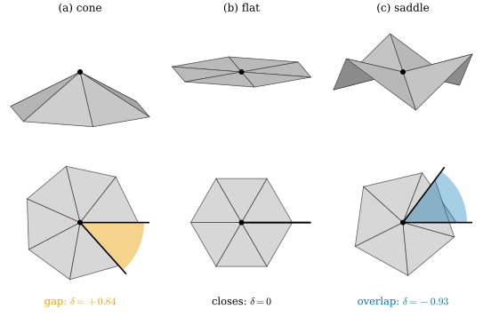
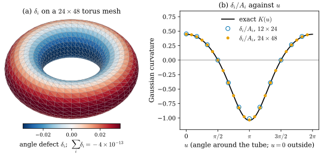
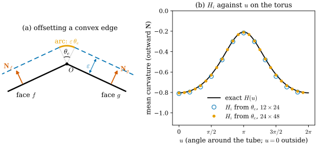
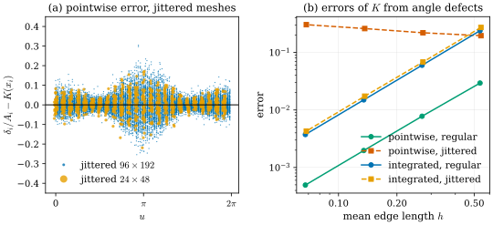

31.2 Discrete Curvature
Goals
- vertex normal을 정의하는 세 방법(uniform, area-weighted, angle-weighted)을 계산하고, 같은 mesh에서 서로 다른 값을 주는 이유와 각각이 무엇에 무관한지 말할 수 있다.
- angle defect의 합이 정확히 \(2\pi\chi\)라는 discrete Gauss–Bonnet theorem을 개수 세기로 유도하고, angle defect의 부호를 펼친 그림으로 읽을 수 있다.
- edge의 bending angle \(\theta_e\)와 길이 \(\ell_e\)로 mean curvature를 쓰고, surface를 바깥으로 밀어낼 때 넓이가 늘어나는 비율(Steiner formula)로 그 상수와 부호를 확인할 수 있다.
- 불규칙한 mesh에서 점마다의 curvature는 수렴하지 않아도 적분한 curvature는 수렴한다는 것을 수치로 보이고, 정의를 고르는 기준을 말할 수 있다.
Prerequisites
- Section 31.1: triangle mesh(Definition 31.1.1), orientation과 face normal \(\mathbf N_f\), curvature가 vertex와 edge에 모인다는 관찰(Figure 31.1.4)
- Section 0.4: shape operator \(W_p = -d\mathbf N_p\), Gaussian curvature \(K\)와 mean curvature \(H\)(Definition 0.4.5), running example의 값(Example 0.4.6)
- Section 0.5: Gauss–Bonnet theorem(Theorem 0.5.8)과 angle defect (0.5.4)
Motivation
Section 31.1의 끝에서, 모서리를 둥글게 깎은 정육면체의 Gaussian curvature는 vertex마다 \(\pi/2\)씩, mean curvature는 edge를 따라 \(-\tfrac12\theta_e\ell_e\)씩 모여 있었다. 일반 mesh에서도 curvature는 face 안이 아니라 vertex와 edge에 있다. 이 절은 그것을 vertex마다의 수로 만든다.
3D vision에서 이 수들은 곳곳에 쓰인다. vertex normal은 shading과 normal consistency loss, Poisson reconstruction의 입력이다. curvature는 feature line 검출, curvature 기반 regularization, 복원 품질의 평가에 쓰인다. 그런데 mesh에는 이계도함수가 없으므로 “vertex \(i\)의 normal”이나 “vertex \(i\)의 \(H\)”는 정의해야 하는 양이고, 그럴듯한 정의가 여럿이다. 이 절의 질문은 둘이다. 같은 양의 여러 정의는 무엇이 다른가? 그 가운데 무엇을 골라야 하는가?
Face Normals and Vertex Normals
face의 normal은 분명하다. orientation이 정해진 face \(f = ijk\)의 \(\mathbf N_f\)는 그 평면의 unit normal이다(Section 31.1). vertex에서는 여러 face가 꺾여 만나므로 하나의 평면이 없다. 자연스러운 방법은 \(i\)에 모인 face normal들의 가중 평균이다.
Definition 31.2.1 (vertex normals). vertex \(i\)를 포함하는 face \(f\)마다 가중치 \(w_f \gt 0\)을 주고
로 정하고, 이것을 vertex \(i\)의 vertex normal이라 한다. 흔히 쓰는 가중치는 셋이다. \(w_f = 1\)(uniform), \(w_f = \operatorname{Area}(f)\)(area-weighted), \(w_f = \theta_i^f\)(angle-weighted, \(f\)에서 \(i\)의 내각).
area-weighted는 계산이 가장 싸다. \(\operatorname{Area}(f)\,\mathbf N_f = \tfrac12 (x_j - x_i) \times (x_k - x_i)\)이므로 cross product를 정규화하지 않고 더하기만 하면 된다. PyTorch3D의 Meshes가 vertex normal을 이렇게 계산한다 [Ravi20].
![두 패널. (a) 위에서 내려다본 vertex 하나와 그 둘레의 회색 삼각형 일곱 개. 오른쪽 위에는 좁은 삼각형 세 개, 왼쪽과 아래에는 큰 삼각형 네 개가 있다. 가운데 검은 점 옆에 exact normal (0, 0, 1)이라고 적혀 있고, 거기서 세 화살표가 나간다. 파란 화살표(uniform)는 아주 짧고, 초록 화살표(area-weighted)는 가장 길게 왼쪽 아래로, 주황 화살표(angle-weighted)는 그 중간 길이로 왼쪽으로 향한다. 아래 범례에 uniform 1.2°, area-weighted 6.5°, angle-weighted 4.2°라고 적혀 있다. (b) log-log 그래프. 가로축 mean edge length h(0.05에서 0.5), 세로축 mean normal error (degrees)(0.2에서 5). 세 직선이 모두 오른쪽 위로 올라간다. 초록(area-weighted)이 가장 위, 파랑(uniform)이 중간, 주황(angle-weighted)이 가장 아래에 있고, 회색 점선 slope 1과 나란하다.](figures/fig-31-2-1-vertex-normals.svg)
Example 31.2.2 (one vertex, three normals). Figure 31.2.1(a)의 vertex를 보자. 오른쪽 위의 세 삼각형은 좁아서 넓이가 0.024–0.025이고 북극에서의 내각이 약 \(25^\circ\)이다. 나머지 네 삼각형은 넓이가 0.09–0.14이고 내각이 \(58^\circ\)–\(83^\circ\)이다. uniform은 face마다 같은 표를 주어 좁은 삼각형 셋이 큰 삼각형 넷과 거의 맞서므로 \(1.2^\circ\)만 기운다. area-weighted는 큰 삼각형 쪽으로 \(6.5^\circ\), angle-weighted는 \(4.2^\circ\) 기운다. 셋 다 “그럴듯한” 평균이지만 같은 vertex에서 \(5^\circ\) 이상 다르다. 이 vertex의 angle defect는 \(10.6^\circ\)로, 이 정도로 휜 곳에서는 normal의 정의가 차이를 만든다.
이제 같은 surface를 다르게 삼각형으로 나누어 보자. 이웃 face 하나를 북극에서 맞은편 edge의 중점으로 잘라 둘로 나누면, 같은 평면 조각이 face 두 개가 되므로 uniform normal이 \(2.61^\circ\) 움직인다. area-weighted와 angle-weighted는 변하지 않는다. 대신 북극에 붙은 두 edge의 중점을 잇는 선으로 모퉁이를 잘라 내면(이웃 face도 함께 잘라 mesh를 유지한다), 북극에 붙은 조각의 넓이가 줄어 area-weighted normal이 \(5.91^\circ\) 움직이고, uniform과 angle-weighted는 그대로다.
Verification: verify/v-31-2-discrete-curvature.py
Proposition 31.2.3 (angle weights see only the surface). 같은 piecewise-linear surface를 다르게 삼각형으로 나누어도 vertex \(i\)가 vertex로 남는 한, angle-weighted normal \(\mathbf N_i\)는 변하지 않는다.
Derivation. \(i\) 근처의 surface는 평면 조각 몇 개로 이루어진 뿔이다. 삼각형 분할을 바꾸면 한 평면 조각이 \(i\)에서 여러 삼각형으로 나뉠 수 있지만, 그 삼각형들의 normal은 모두 그 평면의 normal이고 \(i\)에서의 내각을 더하면 그 평면 조각이 \(i\)에서 차지하는 각이 된다. 따라서 \(\sum_f \theta_i^f\mathbf N_f\)는 “평면 조각마다 (그 조각의 normal) × (그 조각이 \(i\)에서 차지하는 각)”의 합으로, 분할에 무관하다. uniform은 조각이 몇 개로 나뉘었는지에, area-weighted는 조각이 어떻게 잘렸는지에 의존한다.
Figure 31.2.1(b)로 넘어가자. 세 선은 기울기 1인 점선과 나란하다. vertex가 sphere 위에 있고 삼각형이 고르게 작아지면 세 normal의 오차는 모두 \(h\)에 비례해 \(0\)으로 간다. smooth surface에서의 극한은 셋 다 \(\mathbf N\)이다. 그러나 주어진 한 mesh에서는 세 값이 다르고, 어느 것이 더 정확한지는 mesh에 달려 있다. 이 실험에서는 angle-weighted가 가장 작았다.
Angle Defect and the Discrete Gauss–Bonnet Theorem
Gaussian curvature는 vertex에 있다. Example 0.5.9의 angle defect를 상기하자. vertex \(i\)에 모인 내각의 합을 \(2\pi\)에서 뺀 것
이다. boundary vertex에서는 \(2\pi\) 대신 \(\pi\)를 쓴다. 평평한 곳에서는 내각이 한 바퀴 \(2\pi\)를 채우므로 \(\delta_i = 0\)이다.

Figure 31.2.2의 아랫줄을 왼쪽부터 보자. 종이로 만든 cone을 한 edge에서 잘라 펴면 부채꼴 틈이 남는다(a). 틈의 각이 \(\delta\)이고 양수다. 평평한 star는 남는 것도 겹치는 것도 없다(b). 주름진 saddle을 펴면 삼각형이 한 바퀴보다 더 돌아 겹친다(c). 이때 \(\delta \lt 0\)이다. smooth surface에서 elliptic point(\(K \gt 0\))와 hyperbolic point(\(K \lt 0\))의 구분이 그대로 보인다. 세 star의 연결이 같다는 점이 중요하다. angle defect는 연결이 아니라 기하(각)에서 나온다.
Theorem 31.2.4 (discrete Gauss–Bonnet theorem). closed manifold mesh에서
이다. boundary가 있으면 boundary vertex의 항을 \(\pi - \sum_f \theta_i^f\)(boundary 다각형이 그 vertex에서 꺾이는 각)로 바꾸어 같은 식이 성립한다. vertex의 위치를 어떻게 움직여도(삼각형이 퇴화하지 않는 한) 좌변은 변하지 않는다.
Derivation. closed mesh에서 모든 내각을 vertex별로 모으든 face별로 모으든 합은 같다. face별로 모으면 삼각형마다 \(\pi\)이므로 전체 합은 \(\pi n_2\)다. 따라서
\[ \sum_i \delta_i = 2\pi n_0 - \pi n_2. \]
Proposition 31.1.7의 \(3n_2 = 2n_1\)에서 \(\pi n_2 = 2\pi n_1 - 2\pi n_2\)이므로 \(\sum_i\delta_i = 2\pi n_0 - 2\pi n_1 + 2\pi n_2 = 2\pi\chi\)이다. boundary가 있으면 boundary edge가 face 하나에만 속하므로 \(3n_2 = 2n_1 - n_1^{\partial}\)(\(n_1^\partial\)는 boundary edge의 수)이고, boundary 다각형에서는 vertex 수와 edge 수가 같다. 이것을 써서 같은 계산을 하면 boundary vertex의 기준이 \(\pi\)로 바뀐다(Exercise 31.2.4).
이것은 근사가 아니라 정확한 항등식이다. 증명에 쓴 것은 “삼각형의 내각의 합은 \(\pi\)”와 개수 세기뿐이다. smooth surface의 Gauss–Bonnet theorem(Theorem 0.5.8)은 \(K\)를 적분해야 하지만, mesh에서는 curvature가 처음부터 vertex의 점 질량 \(\delta_i\)로 주어져 있어서 적분이 합이 된다. smooth surface에서 \(\delta_i\)는 vertex \(i\)가 맡은 작은 영역 위의 \(\iint K\,dA\)에 해당한다. 그래서 점마다의 Gaussian curvature는 \(\delta_i\)를 그 영역의 넓이 \(A_i\)로 나누어 추정한다. \(A_i\)로는 둘레 삼각형 넓이의 \(1/3\)씩을 모은 barycentric area나, Meyer 등의 mixed Voronoi area를 쓴다 [Meyer03].

Figure 31.2.3의 (a)에서 빨간 바깥쪽과 파란 안쪽이 정확히 상쇄된다. 이 상쇄는 격자의 해상도나 vertex 위치와 무관하다. vertex를 아무렇게나 움직여도 합은 \(0\)으로 남는다. (b)에서는 정해진 격자에서 \(K_i\)가 smooth surface의 \(K(u)\)를 잘 따라간다. 이 mesh는 아주 규칙적이다. 규칙이 깨지면 무슨 일이 생기는지는 이 절의 마지막에서 본다.
Mean Curvature Lives on Edges
Gaussian curvature가 vertex에 있었다면 mean curvature는 edge에 있다. 그 크기를 재는 양은 edge에서 두 face가 꺾인 각이다.
Definition 31.2.5 (bending angle). consistently oriented mesh에서 interior edge \(e\)를 공유하는 두 face \(f, g\)의 unit normal이 이루는 각을 bending angle \(\theta_e \in (-\pi, \pi)\)라 한다. 부호는 surface가 normal의 반대쪽으로 꺾이면(바깥쪽 normal을 고른 convex polyhedron의 모든 edge처럼) 양수, normal 쪽으로 꺾이면 음수로 정한다. edge \(e\)의 길이를 \(\ell_e\)라 쓴다.
두 face 사이의 안쪽 각을 dihedral angle(이면각)이라 하면 \(\theta_e = \pi - (\text{dihedral angle})\)이다. 평평하면 \(\theta_e = 0\)이다. \(\mathbf N\)을 뒤집으면 \(\theta_e\)의 부호가 바뀐다. \(H\)의 부호가 \(\mathbf N\)에 따라 바뀌는 것과 같다(Definition 0.4.5 뒤의 설명).
상수와 부호를 정하는 가장 깔끔한 방법은 surface를 바깥쪽으로 \(\varepsilon\)만큼 밀어내 보는 것이다.
Proposition 31.2.6 (Steiner formula). (a) unit normal \(\mathbf N\)이 정해진 compact smooth surface \(S\)를 \(x \mapsto x + \varepsilon\mathbf N(x)\)로 밀어낸 surface의 넓이는, \(\varepsilon\)이 작을 때
이다. (b) 바깥쪽 normal을 고른 convex polyhedron \(P\)에서 거리가 \(\varepsilon\)인 점들의 surface(Figure 31.1.4(b)처럼 모서리가 둥근 \(P\))의 넓이는 모든 \(\varepsilon \gt 0\)에서 정확히
이다.
Derivation. (a) \(d(x + \varepsilon\mathbf N) = \mathrm{id} + \varepsilon\,d\mathbf N = \mathrm{id} - \varepsilon W_p\)이므로 넓이 요소는 \(\det(\mathrm{id} - \varepsilon W_p) = 1 - \varepsilon\tr W_p + \varepsilon^2\det W_p = 1 - 2H\varepsilon + K\varepsilon^2\)배가 된다. 적분하면 (31.2.4)다. 바깥쪽 \(\mathbf N\)을 고른 반지름 \(r\)인 sphere에서는 \(H = -1/r\), \(K = 1/r^2\)이므로 \(4\pi r^2 + 8\pi r\varepsilon + 4\pi\varepsilon^2 = 4\pi(r + \varepsilon)^2\)으로 맞는다.
(b) 밀어낸 surface는 세 종류의 조각으로 나뉜다. face는 normal 방향으로 옮겨질 뿐이라 넓이가 그대로다. edge \(e\)를 따라서는 반지름 \(\varepsilon\), 중심각 \(\theta_e\)인 cylinder 조각이 생겨 넓이 \(\varepsilon\theta_e\ell_e\)를 더한다(Figure 31.2.4(a)). vertex \(i\)에는 반지름 \(\varepsilon\)인 구의 조각이 생기는데, 그 모양은 \(i\)에 모인 face normal들을 vertex로 하는 spherical polygon을 \(\varepsilon\)배한 것이다. 그 spherical polygon은 face normal \(\mathbf N_f\)에서의 각이 \(\pi - \theta_i^f\)이므로, spherical polygon의 넓이 공식(각의 합에서 \((d - 2)\pi\)를 뺀 값, \(d\)는 vertex 수)에 의해 넓이가 \(\sum_f(\pi - \theta_i^f) - (d - 2)\pi = 2\pi - \sum_f\theta_i^f = \delta_i\)이다.
두 식의 \(\varepsilon\)의 coefficient를 맞대면 mesh의 mean curvature가 정해진다. (31.2.4)의 \(-2\iint H\,dA\) 자리에 (31.2.5)의 \(\sum_e\theta_e\ell_e\)가 있으므로
로 둔다. 둘째 식은 edge마다의 몫 \(-\tfrac12\theta_e\ell_e\)를 두 끝 vertex에 반씩 나누고 vertex의 넓이 몫 \(A_i\)로 나눈 것이다. 부호를 확인하자. 바깥쪽 normal을 고른 convex mesh에서는 \(\theta_e \gt 0\)이므로 \(H_i \lt 0\)이고, 이것은 바깥쪽 \(\mathbf N\)의 sphere에서 \(H = -1/r\)인 것(Example 0.4.6)과 맞는다. 같은 비교에서 \(\varepsilon^2\)의 coefficient가 \(\iint K\,dA \leftrightarrow \sum_i\delta_i\)로, angle defect가 Gaussian curvature의 이산판이라는 것을 한 번 더 확인해 준다.
Example 31.2.7 (cube and icosphere). 한 변이 2인 정육면체에서는 실제 모서리 12개가 \(\theta_e = \pi/2\), \(\ell_e = 2\)이고 면의 대각선 6개는 \(\theta_e = 0\)이다. 따라서 \(-\tfrac12\sum_e\theta_e\ell_e = -6\pi\)이고, Figure 31.1.4의 둥근 정육면체에서 모서리 조각 열두 개의 \(\iint H\,dA = 12 \cdot (-\tfrac{\pi}{4} \cdot 2) = -6\pi\)와 정확히 같다. (31.2.5)는 \(24 + 12\pi\varepsilon + 4\pi\varepsilon^2\)으로, Section 31.1에서 조각별로 구한 넓이와 같다. unit sphere를 근사하는 icosphere에서 \(\tfrac12\sum_e\theta_e\ell_e\)는 level 0–5에서 11.51, 12.26, 12.49, 12.55, 12.56, 12.57로 \(-\iint H\,dA = 4\pi \approx 12.566\)에 다가가고, level 4에서 \(H_i\)는 \([-1.146, -0.998]\) 안에 있다(정확한 값 \(-1\)).
Verification: verify/v-31-2-discrete-curvature.py

Figure 31.2.4의 (a)에서 파란 점선 두 개는 서로 만나지 않고 \(O\) 위에서 벌어진다. 그 틈을 메우는 주황 원호가 edge가 기여하는 넓이다. 두 face가 더 많이 꺾일수록(\(\theta_e\)가 클수록) 원호가 길어진다. smooth surface에서 넓이의 증가율이 \(-2\iint H\,dA\)였으므로, \(\iint H\,dA\)는 edge마다 \(-\tfrac12\theta_e\ell_e\)씩 모여 있다. (b)는 이것을 running example에서 확인한다. 바깥쪽 적도(\(u = 0\))에서 \(H \approx -0.80\), 안쪽 적도에서 \(H \approx -0.21\)이고, 격자를 두 배로 늘리면 오차가 약 1/4로 준다.
mean curvature는 크기뿐 아니라 방향을 가진 양 \(2H\mathbf N\)으로 쓰는 일이 많다(Tour의 (0.4.3)). 그 벡터판은 넓이의 gradient에서 나오며, 다음 절의 cotan Laplacian이 그것이다. (31.2.6)은 그 벡터의 크기를 edge의 각으로 읽은 것이라고 볼 수 있다.
Choosing a Definition: What Is Preserved?
지금까지 같은 양의 정의가 여럿 나왔다. 고르는 기준은 대략 셋이다.
- 정확한 구조를 보존하는가. angle defect는 discrete Gauss–Bonnet을 정확히 만족하고, \(\sum_e\theta_e\ell_e\)는 convex polyhedron의 Steiner formula를 정확히 만족한다. 이런 정의는 topology나 넓이와 관련된 양을 계산할 때 오차가 쌓이지 않는다.
- 변분 성질을 보존하는가. smooth surface에서 \(2H\mathbf N\)은 넓이를 줄이는 가장 빠른 방향이었다(Section 0.4의 mean curvature flow). 이산판에서도 mesh 넓이의 gradient를 mean curvature normal로 삼을 수 있고, 그것이 cotan 공식이다(Section 31.3).
- 수렴하는가. mesh를 촘촘하게 하면 smooth surface의 값에 다가가는가. 여기에는 함정이 있다.
Hildebrandt, Polthier, Wardetzky는 polyhedral surface의 열 \(M_n\)이 smooth surface \(M\)에 Hausdorff distance로 수렴할 때, normal의 수렴, metric의 수렴, 넓이의 수렴, Laplace–Beltrami operator의 수렴이 서로 동치임을 보였다 [Hildebrandt06]. 점만 가까워지고 normal이 가까워지지 않으면 넓이조차 수렴하지 않는다(Schwarz lantern이 그 예다). 같은 논문은 normal까지 수렴하는 경우 mean curvature vector가 적분한 뜻(distribution의 뜻)으로 수렴함을 보이고, 그래도 점마다의 값은 일반적으로 수렴하지 않으며 \(L^2\)에서조차 수렴하지 않는 예를 준다. 그 예가 다음의 4-8 cylinder다.
Example 31.2.8 (the 4-8 cylinder). 반지름 1인 cylinder를 둘레 \(m\)칸, 높이 방향으로 같은 간격 \(h = 2\sin(\pi/m)\)의 격자로 나누고, 정사각형 칸마다 대각선을 바둑판처럼 번갈아 긋는다. 그러면 valence 4인 vertex와 valence 8인 vertex가 번갈아 나온다. cylinder의 \(\abs{H}\)는 어디서나 \(1/2\)이다. cotan 공식((0.4.3)의 이산판)에 barycentric area를 쓰면 valence 4 vertex에서 \(\abs{H_i} = 0.75\), valence 8 vertex에서 \(0.375\)가 나오고, \(m = 16\)이든 \(m = 64\)이든 이 값은 바뀌지 않는다. (31.2.6)도 같은 값으로 간다. mesh를 아무리 촘촘하게 해도 점마다의 값은 정답의 1.5배와 0.75배를 오간다. 논문의 계산은 조금 다르다. vertex마다 넓이 몫 하나로 나누는 대신 finite element의 consistent mass matrix(Section 31.3의 hat function \(\varphi_i\)로 만든 \(\int\varphi_i\varphi_j\,dA\))를 풀어서, valence 4에서 정답의 3배, valence 8에서 0으로 가는 것을 보였다 [Hildebrandt06]. 넓이를 어떻게 넣느냐에 따라 틀리는 정도가 다를 뿐, 둘 다 수렴하지 않는다. 이 mesh에서는 mixed Voronoi area를 쓰면 두 종류 모두 정확히 \(0.5\)가 된다(Exercise 31.2.5). 그러나 이것은 직각이등변삼각형으로 된 이 규칙적인 mesh의 성질이다. 아래 Figure 31.2.5의 불규칙한 mesh에서는 넓이를 어떻게 골라도 점마다의 오차가 남는다.
Verification: verify/v-31-2-discrete-curvature.py

Figure 31.2.5의 (a)부터 보자. jittered mesh에서 vertex들은 모두 정확히 torus 위에 있는데도, \(\delta_i/A_i\)는 정답 주위에 폭이 약 \(\pm 0.1\)인 띠로 흩어진다. vertex 수를 16배로 늘린(edge 길이는 1/4) 파란 띠도 주황 띠와 폭이 같다. 이유는 이렇게 볼 수 있다. curvature는 이계도함수이고, vertex 하나의 값은 이웃 몇 개의 위치로 이계 차분을 하는 셈이다. 삼각형 모양이 \(O(1)\)만큼 불규칙하면 그 차분의 오차도 \(h\)에 무관하게 \(O(1)\)로 남는다. (b)에서 같은 값에 \(\cos u_i\)를 곱해 더하면, 곧 smooth function과 짝지어 적분하면, 흩어진 오차가 이웃끼리 상쇄되어 regular mesh와 같은 속도로 수렴한다. 이것이 “적분한 뜻의 수렴”이다.
Summary
- vertex normal은 face normal의 가중 평균으로 정의하고, 가중치(uniform, area, angle)에 따라 같은 mesh에서 값이 다르다. 극한은 같지만, angle-weighted만 삼각형 분할에 무관하고 area-weighted는 접힌 가는 삼각형에 강하다.
- angle defect \(\delta_i = 2\pi - \sum\theta_i^f\)의 합은 개수 세기만으로 정확히 \(2\pi\chi\)가 된다. \(\delta_i\)의 부호는 펼쳤을 때 틈(\(+\))이 남는지 겹치는지(\(-\))로 보인다.
- mean curvature는 edge에 있다. 밀어낸 surface의 넓이에서 \(\iint H\,dA \leftrightarrow -\tfrac12\sum_e\theta_e\ell_e\)이고, 바깥쪽 normal의 convex mesh에서 \(H_i \lt 0\)이다.
- 불규칙한 mesh에서는 점마다의 \(K_i\), \(H_i\)가 수렴하지 않을 수 있지만(4-8 cylinder, jittered torus), 적분한 양은 수렴한다.
다음 절에서는 mean curvature의 벡터판을 넓이의 gradient로 얻는다. piecewise-linear 함수의 Dirichlet energy에서 cotan 가중치가 나오고, 그것으로 만든 cotan Laplacian이 \(2H\mathbf N\)을 주며, mesh 복원 loss들의 정체를 드러낸다.
Quick check
Exercise 31.2.1 ★ 한 변이 \(a\)인 정육면체 겉면을 face마다 대각선 하나로 나눈 mesh(바깥쪽 normal)에서 vertex마다의 \(\delta_i\)와 \(\sum_e\theta_e\ell_e\)를 구하여라. (31.2.6)의 \(\iint H\,dA\)는 얼마이고, 대각선 edge는 기여하는가?
Solution
vertex마다 직각 세 개가 모이므로(대각선이 있는 face에서는 직각이 \(\pi/4\) 두 개로 나뉠 뿐이다) \(\delta_i = 2\pi - 3\pi/2 = \pi/2\)이고, 8개의 합은 \(4\pi = 2\pi \cdot 2\)이다. 실제 모서리 12개는 \(\theta_e = \pi/2\), 대각선 6개는 평면 안에 있어 \(\theta_e = 0\)이므로 기여하지 않는다. \(\sum_e\theta_e\ell_e = 12 \cdot \tfrac{\pi}{2} \cdot a = 6\pi a\)이고 \(\iint H\,dA \leftrightarrow -3\pi a\)이다. \(a = 2\)이면 \(-6\pi\)로 Example 31.2.7과 같다.
Verification: verify/v-31-2-discrete-curvature.py
Exercise 31.2.2 ★ vertex가 \((\pm1, 0, 0), (0, \pm1, 0), (0, 0, \pm1)\)인 정팔면체에서 \(\delta_i\)와 \(\theta_e\)를 구하고, Theorem 31.2.4와 \(-\tfrac12\sum_e\theta_e\ell_e\)를 계산하여라.
Solution
vertex마다 정삼각형 네 개가 모이므로 \(\delta_i = 2\pi - 4\pi/3 = 2\pi/3\)이고, 6개의 합은 \(4\pi\)이다. 이웃한 두 face의 normal은 예를 들어 \((1, 1, 1)/\sqrt3\)과 \((-1, 1, 1)/\sqrt3\)이고 inner product가 \(1/3\)이므로 \(\theta_e = \arccos(1/3) \approx 70.53^\circ\)(convex이므로 양수)다. edge는 12개, 길이 \(\sqrt2\)이므로 \(-\tfrac12\sum_e\theta_e\ell_e = -6\sqrt2\arccos(1/3) \approx -10.45\)이다.
Verification: verify/v-31-2-discrete-curvature.py
Exercise 31.2.3 ★ 참인지 거짓인지 판별하여라. “mesh의 평평한 영역에서 vertex \(i\)에 붙은 face 하나를 \(i\)를 지나는 선으로 둘로 나누면, area-weighted vertex normal이 바뀐다.”
Solution
거짓이다. 나뉜 두 삼각형의 normal은 원래 face의 normal과 같고 넓이의 합도 같으므로 \(\sum_f\operatorname{Area}(f)\mathbf N_f\)가 변하지 않는다. 내각의 합도 같으므로 angle-weighted도 변하지 않는다. 바뀌는 것은 uniform이다(Example 31.2.2에서 \(2.61^\circ\)). area-weighted가 바뀌는 것은 \(i\)를 지나지 않는 선으로 잘라 \(i\)에 붙은 조각의 넓이가 달라질 때다.
Verification: verify/v-31-2-discrete-curvature.py
Exercise 31.2.4 ★★ boundary가 있는 manifold mesh에서 \(\sum_{i \notin \partial}\delta_i + \sum_{i \in \partial}\big(\pi - \sum_f\theta_i^f\big) = 2\pi\chi\)임을 보여라. 삼각형 하나짜리 mesh로 확인하여라.
Solution
boundary vertex의 수를 \(n_0^\partial\), boundary edge의 수를 \(n_1^\partial\)라 하자. boundary는 닫힌 다각형들이므로 \(n_0^\partial = n_1^\partial\)이다. face마다 edge가 셋이고 interior edge는 face 둘에, boundary edge는 face 하나에 속하므로 \(3n_2 = 2n_1 - n_1^\partial\)이다. 모든 내각의 합은 \(\pi n_2\)이므로 좌변은 \(2\pi n_0 - \pi n_0^\partial - \pi n_2\)이다. 여기에 \(-\pi n_2 = 2\pi n_2 - 3\pi n_2 = 2\pi n_2 - 2\pi n_1 + \pi n_1^\partial\)을 넣으면 좌변은 \(2\pi n_0 - 2\pi n_1 + 2\pi n_2 + \pi(n_1^\partial - n_0^\partial) = 2\pi\chi\)이다. 삼각형 하나면 vertex 셋이 모두 boundary이고 \(\sum(\pi - \theta) = 3\pi - \pi = 2\pi = 2\pi \cdot 1\)이다. Möbius strip mesh에서도 \(0\)이 나온다(orientability는 쓰지 않았다).
Verification: verify/v-31-2-discrete-curvature.py
Exercise 31.2.5 ★★ Example 31.2.8의 4-8 cylinder에서 삼각형은 다리 길이가 \(h\)인 직각이등변삼각형(에 가까운 것)이다. valence 4와 valence 8인 vertex의 barycentric area를 구하고, 0.75와 0.375가 나오는 이유를 설명하여라. 두 vertex의 mixed Voronoi area는 어떤가?
Solution
삼각형 하나의 넓이는 \(h^2/2\)이다. valence 4 vertex에는 삼각형 4개가 붙어 barycentric area가 \(4 \cdot \tfrac13 \cdot \tfrac{h^2}{2} = \tfrac23h^2\), valence 8 vertex에는 8개가 붙어 \(\tfrac43h^2\)이다. 그런데 vertex 하나가 평균적으로 맡는 넓이는 정사각형 칸 하나, 곧 \(h^2\)이다. cotan 공식의 분자 \(\sum_j(\cot\alpha_{ij} + \cot\beta_{ij})(x_j - x_i)\)는 두 종류 모두 \(2 \cdot 2H\mathbf N \cdot h^2\)에 가깝게 나오므로(Voronoi area로 나누면 정확히 \(\abs{H} = 1/2\)이 나온다), barycentric area로 나누면 \(\abs{H}\)가 \(h^2/(\tfrac23h^2) = 1.5\)배와 \(h^2/(\tfrac43h^2) = 0.75\)배가 된다. 곧 \(0.75\)와 \(0.375\)다. mixed Voronoi area는 직각 모퉁이(valence 4)에서 삼각형마다 \(h^2/4\), 45° 모퉁이(valence 8)에서 \(h^2/8\)이라 둘 다 \(h^2\)이다. 넓이 몫이 실제로 vertex가 맡는 영역과 맞지 않으면 refinement로 고쳐지지 않는 오차가 남는다.
Verification: verify/v-31-2-discrete-curvature.py